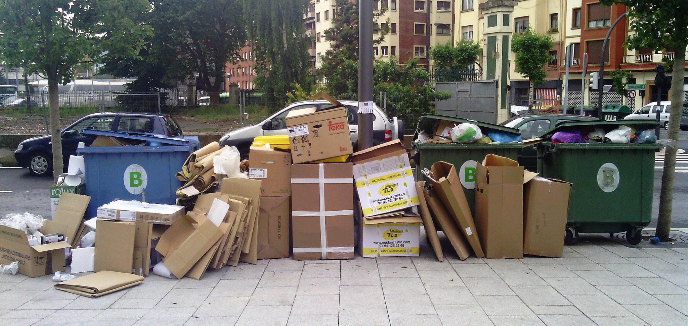

Mi primera página con estilo
¡Residuos Urbanos!
Los residuos urbanos, también conocidos como residuos municipales, son aquellos desechos que se generan en las zonas urbanas y provienen de diversas fuentes, como hogares, comercios, oficinas y espacios públicos. El manejo adecuado de los residuos urbanos es crucial para mantener la higiene, la salud pública y la sostenibilidad ambiental en las ciudades.
Acciones para evitar los Residuos Urbanos:
- Elegir productos duraderos y de calidad
- Dar una segunda vida a objetos en lugar de desecharlos.
- Separar los residuos según el tipo de material (plástico, papel, vidrio, metal)
- Crear una compostera para residuos orgánicos como restos de comida y podas de jardín.

¡Este es el principio de un diseñador web!
Creada por Melissa Sanchez Aguirre, Pablo Téllez Rosas, Iván Alexander García Hernández, Vanessa Castellanos Revuelta, Ramiro Carachure Estrada e Isidro Junior Pineda Mojica